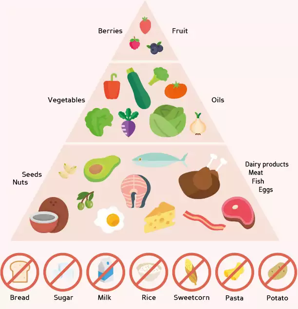

 Aunque cada persona se adapta de distinta forma a la dieta keto, lo cierto es que existen tres fases comunes para todos que Martina describe así: Fase de inducción: se podría decir que es la más importante porque es cuando se reduce el consumo de carbohidratos a entre 20 y 25 gramos al día para entrar en el estado de cetosis (los niveles de cetonas en el cuerpo debe estar entre 0,5 y 3 mm). Este periodo suele durar de 3 a 4 semanas y en él puedes llegar a sentirte algo abrumada e incluso tener etapas de ansiedad. Para ello Martina Slajerova deja los que, a su criterio, son las claves del éxito de esta fase: simplificar tu alimentación, ingerir suficiente cantidad de proteínas y grasas, evitar atracones de comida y evitar picar entre horas. Fase de adaptación cetogénica: no tiene una duración concreta, todo depende de las metas que se fije cada persona. Martina Slajerova asegura que al ser un proceso complejo en el que están involucrados casi todos los sistemas del cuerpo, es normal sentirse cansada o incluso notar los síntomas de la "gripe cetogénica", ya que el cuerpo necesita acostumbrarse a utilizar los ácidos grasos y las cetonas como fuentes principales de energía. Fase de mantenimiento: como en toda dieta, esta fase es la más difícil de llevar, pues el objetivo es seguir el nuevo estilo de nutrición a largo plazo y se puede caer en más de una tentación. La fuerza de voluntad es el pilar fundamental en el que la gente debe apoyarse para salir con éxito de esta fase final. A pesar de los inconvenientes que, a priori, refleja la dieta keto o cetogénica, lo cierto es que son muchos los casos de personas que han obtenido grandes resultados siguiendo este régimen nutricional.